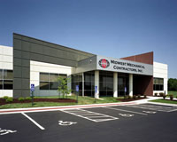

<div class="row">
 <div class="large-12 columns">
  <h1>
   how to start your project
  </h1>
  <p>
   <a href="../Images/projects/Midwest-Mechanical/Midwest-Mechanical-1-med.jpg">
    
   </a>
   We understand how to get a new building project off the ground. Issues like site selection, financing and zoning may be daunting to you, but they are part of our everyday business activities.
  </p>
  <p>
   We believe education can go a long way to ease the stress while your project advances. That's why we've developed a Resource Book that will share our knowledge to get your project moving in the right direction. We're eager to provide you with a copy.
  </p>
  <p>
   Of course, this won't obligate you to us, but may make you appreciate us... that's what we're hoping for! So feel free to call us at 816-246-4800 and we'll send your free copy.
  </p>
 </div>
</div>
